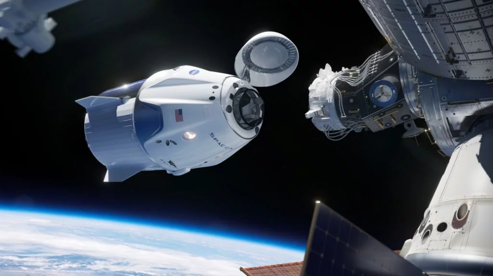
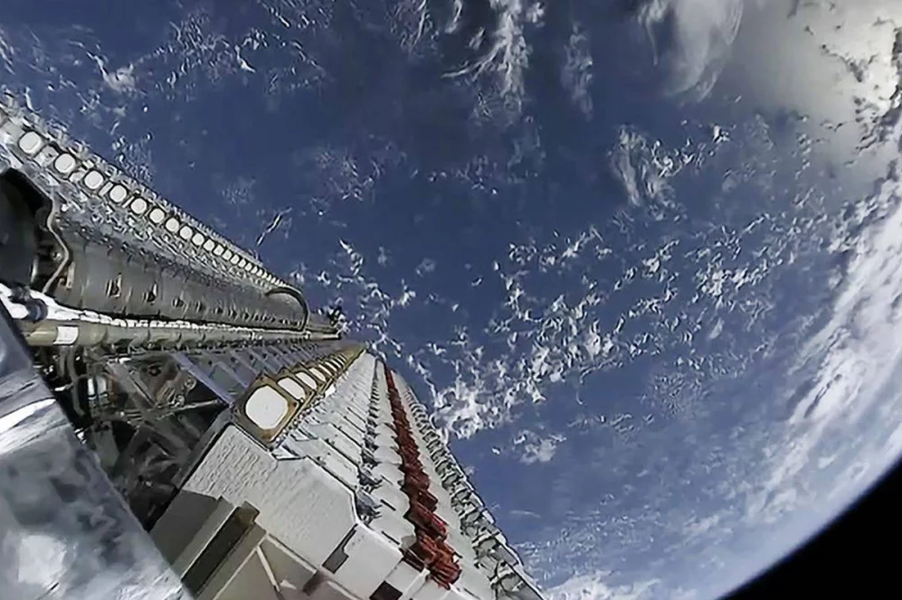
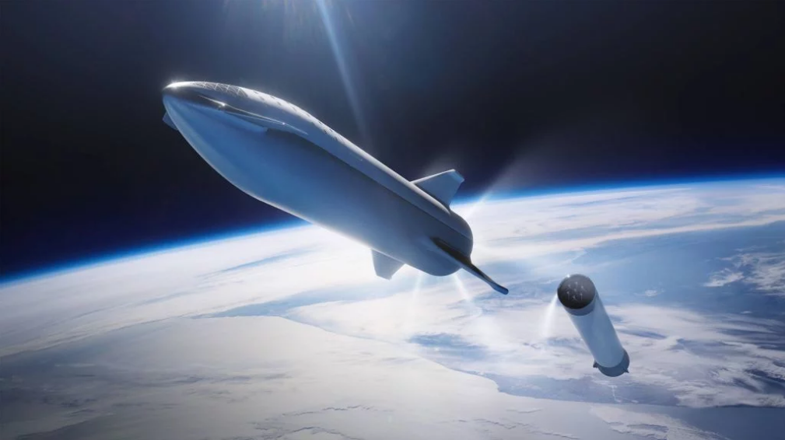

A rodada não deve terminar até a segunda semana de março e inclui uma oferta de compra equivalente aos atuais acionistas da SpaceX. Os detalhes do aumento podem mudar dependendo das condições do mercado entre agora e a primeira quinzena do mês que vem. No ano passado, o grupo espacial de Musk levantou US$ 1,33 bilhão em três rounds de financiamento. É uma das empresas privadas mais valiosas do mundo e, com aumentos consistentes de excesso de capital, as cotas já aparecem entre as mais procuradas da lista de empresas mais próximas de pré-abertura de capital na Bolsa de Valores. A SpaceX, por enquanto, não falou oficialmente sobre o assunto. |
A nave tripulável Crew Dragon |
| 
|
Crew Dragon é a espaçonave criada com fundos da NASA para levar os astronautas estadunidenses à Estação Espacial Internacional (ISS, na sigla em inglês) a partir deste ano, e também prevê transportar turistas espaciais em missões privadas diversas. A agência espacial dos EUA concedeu à SpaceX mais de US$ 3,1 bilhões para desenvolver a cápsula Crew Dragon, desde que a empresa ganhou seu primeiro contrato para tal em 2014. Além disso, Musk disse que a SpaceX gastou "centenas de milhões de dólares" de seus próprios fundos para desenvolver o protótipo. O primeiro voo de teste com a nave já foi realizado com sucesso, e agora a Crew Dragon passa por testes finais de pré-lançamento prevendo a primeira viagem tripulada à ISS. A NASA confirmou em comunicado em 14 de fevereiro que a SpaceX será a primeira a lançar os astronautas da agência em solo americano desde o final dos ônibus espaciais, em 2011. Outra empresa que está na jogada é a Boeing, com a nave Starliner, que também recebeu fundos da NASA e será usada para transportar astronautas norte-americanos para a ISS, tal qual a nave de Elon Musk. |
O projeto Starlink |
| 
|
Starlink é o ambicioso plano da empresa de criar uma rede global composta por dezenas de milhares de pequenos satélites para fornecer internet de alta velocidade a qualquer lugar do mundo. A previsão é de que a constelação de satélites chegue a até 42 mil unidades, mas uma quantidade inicial de 12 mil já será suficiente para iniciar a oferta em algumas regiões do planeta. Até agora, a empresa lançou 300 deles, em lotes de 60 unidades por vez. E aqui há uma concorrência acirrada, pois Jeff Bezos e sua Amazon também têm planos semelhantes com o projeto Kuiper — quem se estruturar com antecedência pode se tornar a maior operadora de satélites do mundo em termos de quantidade. Ainda, há a OneWeb, que já lançou 40 satélites com o mesmo objetivo, e o Facebook vem trabalhando em um programa chamado Athena, que também lançará satélites de internet. A presidente e COO da SpaceX, Gwynne Shotwell, disse há dois anos que “custará à empresa cerca de US $ 10 bilhões ou mais” para construir a rede Starlink. O alto custo até mesmo estaria fazendo com que os executivos da SpaceX considerem abrir mão de seu negócio de satélites, criando uma empresa independente chamada Starlink, que pode até mesmo ter seu capital aberto depois disso. |
O foguete Starship |
| 
|
Starship é o nome do enorme e poderoso foguete de última geração da SpaceX, que ainda está em desenvolvimento. O sonho de Musk é que seja um veículo totalmente reutilizável, como um avião comercial, e capaz de transportar até 100 pessoas para destinos como Lua e Marte. A companhia vem construindo o modelo em uma instalação no sul do Texas, com plataformas de lançamento também sendo produzidas por lá, além da Flórida. |